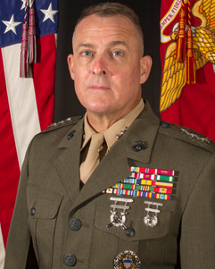

Biography
Lieutenant General Michael S. Groen
Director
 Lieutenant General Michael S. Groen assumed his current position as the Director, Joint Artificial Intelligence Center on 1 October 2020. As a member of the JAIC team, he leads the transformation of U.S. Joint warfighting and departmental processes through the integration of Artificial Intelligence.
Prior to this nomination, General Groen was assigned to the National Security Agency and served as the Deputy Chief of Computer Network Operations, leading this premier Computer Network Exploitation organization. In 2018/2019, he served as the Director for Intelligence, Joint Staff (J2) in direct support of the Chairman of the Joint Chiefs and the Joint Staff. He also served as the Vice J2. Prior to his Joint Staff assignments, General Groen served as the Director of Marine Corps Intelligence (DIRINT) where he championed the redesign of intelligence capabilities into a Marine Corps Intelligence, Surveillance, and Reconnaissance Enterprise (MCISRE).
General Groen has served in a variety of operational, ground, air, and naval units. His service has included Central America, the Western Pacific, the Philippines, the Balkans and Iraq, General Groen served afloat with the 31st Marine Expeditionary Unit and supported aviation units in the U.S. and Okinawa. In 2003, he was assigned to the 1st Marine Division. He initially served as the Deputy Intelligence officer, then became the Intelligence Officer (G-2) in 2004. He has supported both conventional combat and counter-insurgency operations. General Groen was a principal in the redesign of Marine Intelligence to meet the emerging demands of the Global War on Terror. Later, General Groen served with the U.S. European Command as the Chief of Intelligence Planning for Europe and Africa. He was instrumental in transitioning intelligence processes into the Joint Intelligence Operations Center.
General Groen has commanded intelligence and operational units including the 3d Radio Battalion (conducting its first deployment to the Southern Philippines in support of Operation ENDURING FREEDOM) and the Headquarters Battalion, 1st Marine Division in Camp Pendleton, California. He was also given additional duties as the Division’s Chief of Staff. As a perpetual change-agent, he has served as a Combat Development, Requirements, and Acquisition officer. He served as the initial Director of the Commandant's Amphibious Capabilities Working Group (Capabilities), the Ellis Group (Expeditionary Futures) and as the Director of the Commandant of the Marine Corps Strategic Initiatives Group (SIG).
General Groen is a graduate of Calvin College in Grand Rapids, MI with a Bachelor’s Degree in Engineering. He has received multiple Master’s Degrees from the University of Southern California (Systems Management) and from the Naval Postgraduate School (Electrical Engineering, Applied Physics.) General Groen is a graduate of the Marine Corps Command and Staff College and the Naval War College.
General Groen's personal decorations include the Defense Superior Service Medal, the Legion of Merit, the Bronze Star, and the Combat Action Ribbon.
General Groen is a native of Michigan with three sons.
(Current as of January 2022)